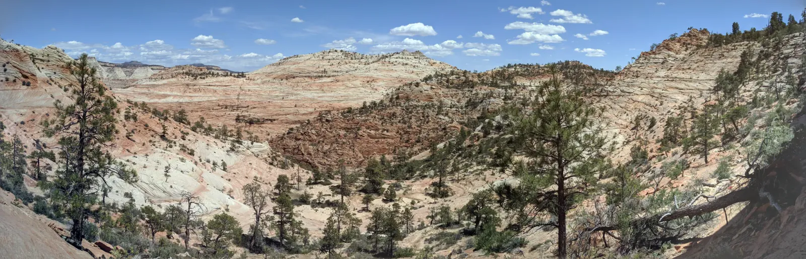

Through the Arch
I had been to Zion before, and this time I spent my two days on the east side of the park. There the Zion-Mount Carmel Highway climbs out of the canyon in a series of switchbacks, past red stone parapets and a little arched bridge, then disappears straight into the mountain. In early May the trees were a fresh spring green against the red rock, and every pullout offered another cream, pink and vermilion tower against a bright blue sky. Then came the tunnel. Finished in 1930, it has windows cut right through the canyon wall, and each one frames the cliffs like a painting in a gallery. Who puts windows in a tunnel? I'm glad someone did. Stopping inside is not allowed, so you take what you can from the car as the arches roll past.
Past the tunnel, the canyon walls give way to smooth, striped slickrock that rolls off in every direction, with ponderosa and pinyon pines rooted wherever a crack holds a little soil. I know those stripes by now: sand dunes turned to Navajo Sandstone. I still have trouble believing that I walked across a desert no person ever saw. Up at the viewpoints, narrow gorges cut deep between overhanging ledges, and across the way a giant alcove had been scooped out of a cliff, the Great Arch of Zion, I believe. Even the small things stood out. Down by my feet, a single white daisy was growing out of dry, rocky ground.


By evening the low sun had turned the slickrock gold and filled the gorges with shadow. Camp that night was a tent hung between the trees and a campfire in a pit of orange sand. The next day the tunnel offered its windows again, and the same cliffs looked different through every one.